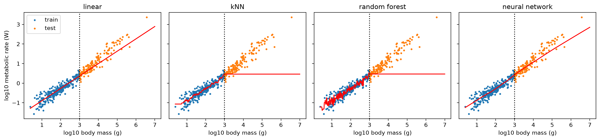

kNN and the forest go flat: they average training animals, so an elephant is a big rat, about 3 W. The line keeps going. The network continues straight too: outside its training range a ReLU network is linear.